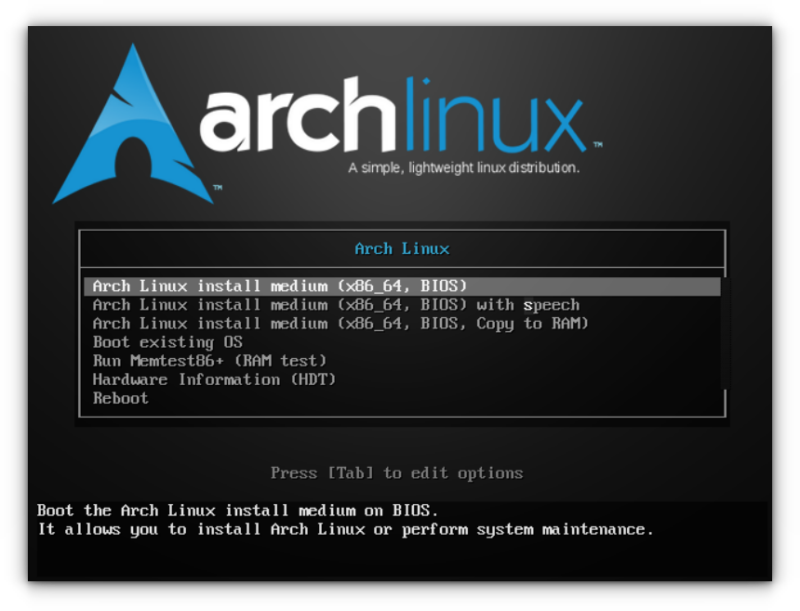

المتطلبات
- فلاشة USB 4GB+
- تحميل Arch Linux ISO
- برنامج حرق مثل Rufus أو balenaEtcher
شاشة BIOS (Boot Option)

شاشة إقلاع Arch Linux من الفلاشة
الطريقة الأولى: archinstall (الأسهل)
بعد الإقلاع من الفلاشة، شغل الأمر التالي ثم اتبع الخطوات التفاعلية (اختيار اللغة، القرص، المستخدم...).
سيتم تفعيل الإنترنت تلقائيًا إذا كان لديك كابل أو شبكة واي فاي مدعومة.
سيتم تفعيل الإنترنت تلقائيًا إذا كان لديك كابل أو شبكة واي فاي مدعومة.
archinstall
ملاحظات:
- اختر Network configuration أثناء التثبيت لتفعيل الإنترنت.
- يمكنك تثبيت برامج إضافية من قائمة Additional packages أثناء التثبيت.
شاشة تثبيت Arch (archinstall)

الطريقة اليدوية الكاملة (كل أمر منفصل مع شرح واضح)
نفذ الأوامر التالية بالترتيب بعد الإقلاع من الفلاشة:
تغيير خط التيرمنال (مثال: خط أكبر وأكثر وضوحًا)
setfont ter- 132bتفعيل الإنترنت السلكي تلقائيًا
systemctl start dhcpcdأو تفعيل الإنترنت اللاسلكي (واي فاي)
wifi-menuتأكد من الاتصال بالإنترنت
ping archlinux.orgتحديث الساعة تلقائيًا
timedatectl set-ntp trueتحديث قاعدة بيانات الحزم (اختياري قبل التقسيم)
pacman -Syتقسيم القرص الصلب (مثال: cfdisk)
cfdisk /dev/sdaتهيئة القسم الرئيسي بنظام ext4
mkfs.ext4 /dev/sda1تركيب القسم على نقطة التثبيت
mount /dev/sda1 /mntتثبيت النظام الأساسي وبرامج الشبكة الأساسية
pacstrap /mnt base linux linux-firmware networkmanager nano sudoإنشاء ملف fstab تلقائيًا
genfstab -U /mnt >> /mnt/etc/fstabالدخول إلى النظام الجديد (chroot)
arch-chroot /mntتعيين المنطقة الزمنية
ln -sf /usr/share/zoneinfo/Asia/Riyadh /etc/localtimeمزامنة الساعة مع الهاردوير
hwclock --systohcتفعيل اللغات (افتح الملف وفعل en_US.UTF-8 و ar_SA.UTF-8)
nano /etc/locale.genتوليد اللغات
locale-genضبط اللغة الافتراضية للنظام
echo "LANG=en_US.UTF-8" > /etc/locale.confضبط تخطيط الكيبورد الافتراضي
echo "KEYMAP=ar" > /etc/vconsole.confتعيين اسم الجهاز (hostname)
echo myarch > /etc/hostnameضبط ملف hosts
echo "127.0.0.1 localhost" >> /etc/hosts
echo "::1 localhost" >> /etc/hosts
echo "127.0.1.1 myarch.localdomain myarch" >> /etc/hostsتعيين كلمة مرور المستخدم الجذر (root)
passwdتثبيت محمل الإقلاع (GRUB) لنظام BIOS
pacman -S grubتثبيت GRUB على القرص
grub-install --target=i386-pc /dev/sdaتوليد ملف إعدادات GRUB
grub-mkconfig -o /boot/grub/grub.cfgتفعيل الشبكة تلقائيًا بعد الإقلاع
systemctl enable NetworkManagerإضافة مستخدم عادي مع صلاحيات sudo
useradd -m -G wheel -s /bin/bash zyadتعيين كلمة مرور للمستخدم الجديد
passwd zyadتفعيل صلاحيات sudo للمجموعة wheel
EDITOR=nano visudoابحث عن السطر %wheel ALL=(ALL:ALL) ALL واحذف علامة # من أوله ثم احفظ واخرج
تثبيت متصفح وبرامج أساسية (firefox, git, base-devel)
pacman -S firefox git base-develتثبيت yay (AUR helper) من المستخدم العادي
su - zyadgit clone https://aur.archlinux.org/yay.gitcd yaymakepkg -siتفعيل الألوان في pacman
sudo nano /etc/pacman.confاحذف علامة # من Color و ParallelDownloads ثم احفظ واخرج
تثبيت واجهة GNOME كاملة
sudo pacman -S gnome gnome-extraتفعيل مدير الدخول GNOME
sudo systemctl enable gdmتحديث النظام بالكامل بعد أول إقلاع
sudo pacman -Syuإعادة التشغيل والدخول للنظام الجديد
exit
umount -R /mnt
rebootشاشة ترمينال Arch Linux بعد الإقلاع